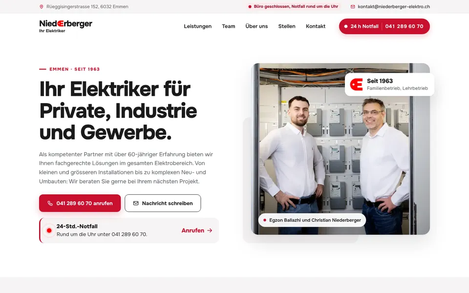
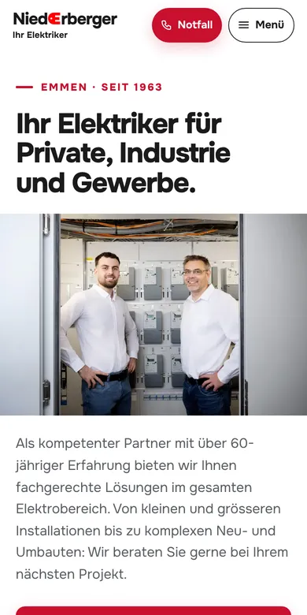

Design A
Ihr Elektriker in Emmen
Hell und klar in Rot-Weiss: Im ersten Bild stehen Christian Niederberger und Egzon Ballazhi vor dem offenen Zählerschrank, daneben die Notfall-Karte mit Ihrer Nummer. Darunter folgen Elektro, Telefon und Netzwerk als Reiter, Ihre Bewilligungen als Typenschilder, das ganze Team, der Zeitstrahl seit 1963 und ein Kontakt, der anzeigt, ob das Büro gerade offen ist.
- Hell, Rot-Weiss
- Notfall ganz oben
- Ganzes Team